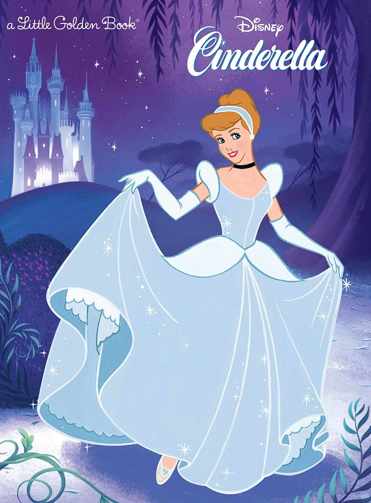
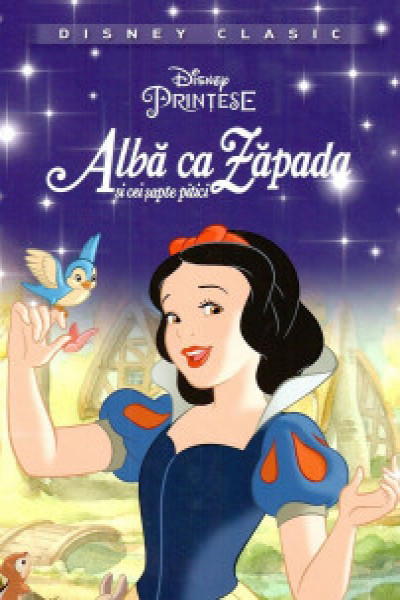

"Rapunzel" de Fratii Grimm

Au fost odata ca niciodata un imparat si o imparateasa care urmau sa aiba un copil, insa pe masura ce se apropia momentul nasterii, femeia se simtea tot mai rau. Numai legumele proaspete din gradina vrajitoarei din vecinatate ii faceau bine, astfel ca in fiecare noapte sotul ei sarea gardul şi fura de acolo. Dar cat putea dura acest viclesug?
Intr-o noapte, vrajitoarea l-a prins. "Drept pedeapsa, o sa-mi dai mie copilul ce va veni" urla ea infuriata. Bietului om i-a fost teama sa-i spuna sotiei, dar atunci cand copilul se nascu, vrajitoarea sosi si, spre groaza parintilor, o lua pe micuta.
Fetita, care se numea Rapunzel, a crescut şi a ajuns o femeie frumoasă. De teama sa nu fuga de la ea, femeia cea rea a inchis- o intr- un turn fara usa. In fiecare zi cand se intorcea acasa, vrajitoarea ii poruncea fetei sa-si scoata pe fereastra parul lung, pe care ea se catara pentru a ajunge sus.
Intr-o zi, un print o vazu pe Rapunzel scotandu-si parul pe fereastra si se indragosti pe loc de ea. Dupa plecarea cotoroantei, printul ii striga fetei, asa cum o auzise pe zgripturoaica a carei prizoniera era frumoasa: "Rapunzel, coboara-ti parul pe fereastra!". Auzind aceste cuvinte, fata se supuse, iar printul se catara repede in turn. Printul si Rapunzel faceau impreuna planuri de evadare, pana cand, odata, vrajitoarea ii prinse. Ea se infurie asa de tare, incat o izgoni pe Rapunzel intr-un loc pustiu, iar pe prinţ îl împinse din turn. Acesta căzu într-o tufă de trandafiri si a fost orbit de spini. Printul cel orb a ratacit prin padure multi ani, in cautarea lui Rapunzel.
Intr-o zi insa, o auzi cantand si, crezand ca viseaza, incepu sa planga. Fata ii auzi plansul si alerga la el. Cand il imbratisa, lacrimile ei cazura in ochii lui, iar printul isi recapata vederea, ca prin minune. S-au intors impreună in imparatia printului, unde peste putin timp s-au casatorit. La nunta au venit si parintii fetei si au trait fericiti cu totii pana la adanci batraneti.
Aceasta poveste invata multe lectii copiilor. Consecintele furtului, valoarea rabdarii si determinarii, sunt unele dintre aceste calitati. Morala povestii poate fi interpretata astfel. Atunci cand ceva este destinat sa se intample, nimeni, prin vreuna dintre puterile lor, nu o poate opri sa se intample. Nu ar trebui sa renuntam niciodata la sperantele noastre, indiferent cat de grea sau grea ar fi situatia.
"Cenusareasa" de Charles Perrault
Odata a fost un vaduv, care s-a casatorit pentru a doua oara cu o femeie mandra si aroganta. Ea a avut doua fiice. Prima sa sotie, a avut o fiica frumoasa pe nume Ella, care era o fata de o bunatate extraordinara.
Impreuna cu fiicele ei, mama vitrega si-a angajat fiica in toate treburile casnice. In cazul in care fata isi termina sarcinile, ea se aseza langa foc, de unde si porecla de “Cenusareasa”. Biata fata isi purta oful cu rabdare, si nu indraznea sa ii spuna tatalui ei.
Intr-o zi printul a invitat toate fecioarele din tinut la un bal pentru a isi putea alege o sotie. Deoarece cele doua surori vitrege au fost invitate, ele au inceput vesele sa isi pregateasca garderoba in timp ce Cenusareasa le asista, insa ele o tachinau in continuare spunand ca o servitoare nu ar putea participa niciodata la un bal.
Dupa ce surorile ei au plecat, ea a izbucnit intr-un plans de neoprit. Atunci si-a facut aparitia zana, care a promis ca o va ajuta in a participa la bal. Ea a transformat un dovleac intr-o caleasca, soarecii in cai, un sobolan intr-un vizitiu, si soparlele in insotitori. Apoi a transformat zdrentele ei intr-o rochie frumoasa, completand tinuta cu o delicata pereche de pantofi de sticla. Zana apoi i-a poruncit sa se intoarca inainte de miezul noptii, pentru ca dupa ora douasprezece vraja se va rupe. La bal, intreaga curte a fost vrajita de aceasta femeie, in special printul care nu a plecat de langa ea. Nerecunoscuta de catre surorile ei vitrege, si-a adus aminte sa plece inainte de miezul noptii. Intoarsa acasa, ea ia multumit zanei cea bune, apoi si-a salutat surorile care nu se opreau din a vorbi despre frumoasa fata de la bal pe care nu o cunostea nimeni.
Cu ajutorul zanei ea a participat la bal si in seara urmatoare, fermecand printul chiar mai mult. Cu toate acestea, ea a plecat doar la ultima bataie a ceasului care anunta miezul noptii, iar in graba ei si-a pierdut un pantof de sticla coborand pe treptele palatului. Printul a urmarit-o, dar nu a mai putut-o prinde, insa, in urma ei a recuperat pantoful pierdut si a promis ca o sa gaseasca fata careia ii apartine si o va lua de sotie.
Printul a incercat papucul pe toate fetele din tinut. Surorile vitrege au incercat in zadar, a intrebat daca poate incerca si ea pantoful. Fireste, papucul s-a potrivit perfect, iar apoi s-a incaltat si cu celalat pantof pentru a risipi orice urma de indoiala. La vederea acestui lucru surorile vitrege i-au cerut iertare, si ea le-a iertat pentru cruzimile lor. Cenusareasa s-a intors la palat si s-a casatorit cu printul, iar surorile ei vitrege s-au casatorit deasemena cu doi lorzi.
Morala povestii: Frumusetea este o comoara, dar bunatatea este de nepretuit. Fara ea nimic nu este posibil.
"Alba ca Zapada si cei sapte pitici" de Fratii Grimm
O imparateasa statea la geam si cosea langa fereastra. S-a intepat in deget si trei picaturi de sange au cazut in zapada, facand-o sa-si doreasca un copil alb ca zapada, cu buzele rosii ca sangele si cu parul ca de abanos.
Dupa ceva timp, imparateasa a ramas insarcinata si a nascut o fetita exact asa cum isi dorise. Toti s-au bucurat si i-au pus numele de Alba ca Zapada. La putin timp dupa ce a nascut-o, imparateasa a murit, iar imparatul, la fix un an s-a recasatorit cu o femeie foarte frumoasa insa si foarte rea.
Dupa ce crescu, Alba ca Zapada deveni foarte frumoasa si iubita de tot regatul. Mama ei vitrega avea o
oglinda fermecata care i-a spus ca Alba ca Zapada este cea mai frumoasa din imparatie si ea s-a suparat
foarte rau.
A vorbit cu un vanator si i-a spus acestuia s-o duca in padure si s-o omoare, insa vanatorul care ii era
loial fostei imparatese, i-a dat drumul fetei si i-a spus sa nu se mai intoarca niciodata.
Alba ca Zapada a ratacit prin padure pana cand a dat de casuta unor pitici. Le-a facut curat in casa si cei sapte pitici i-au propus sa stea cu ei. Mama vitrega afla de la oglinda ei ca Alba ca Zapada traieste si se transforma intr-o baba si pleaca spre casa piticilor.O gaseste pe Alba ca Zapada si o pune sa probeze o cingatoare, care o stranse asa de tare incat fata muri. Cand venira piticii, taiara cingatoarea si fata isi reveni.
Mama ei vitrega iar venii si ii dadu un pieptane, iar Alba ca Zapada cum il puse in par, muri. Piticii
scoasera pieptanul din par si fata isi reveni din nou.
Imparateasa iar veni si ii dadu fetei un mar
otravit. Alba ca Zapada musca din mar si muri din nou. Cand venira cei sapte pitici, nu mai putura sa
faca nimic, si in loc s-o ingroape, ii facura un sicriu de clestar.
Un print dintr-o imparatie vecina, trecu pe acolo si se indragosti imediat de fata din sicriu. Isi puse
slugile s-o duca la palatul lui si pe drum, unul din servitorii care carau sicriul pe umar se impidica
si Alba ca Zapada cazu. Ii sari bucata de mar din gat si se trezi la viata. Alba ca Zapada se casatori
cu printul si toata lumea era fericita.
Mama ei vitrega afla si veni la palat s-o vada pe Alba ca
Zapada. Cum o vazu, se facu foarte urata si fugi in lume.
Morala povestii Alba ca Zapada este ca trebuie sa fii bun peste tot si sa ai incredere doar in oameni buni si sa nu ii crezi pe oamenii falsi chiar daca iti vor da ceva pe degeaba.
Fiecare om este frumos in felul lui, fiecare are ceva frumos care-i defineste trasaturile si niciodata sa nu incerci sa faci rau altei persoane deorece binele castiga mereu. Intotdeauna te poti baza pe cei care ti-au fost alaturi la rau.